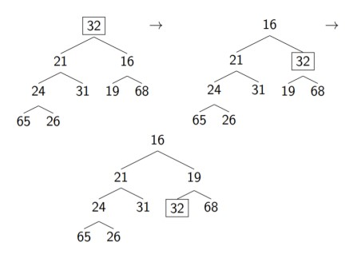

ESC190 Lecture Notes Part 3: Advanced Data Structures and Algorithms
See all lecture notes here.
L22: Stacks and Queues
Stack ADT
A stack is a collection of elements with the operations
push and pop
pushinserts the elements into the collectionpopremoves the most recently added element that's not yet removed and returns it
[ ] then run the following commands, we have:
push(1)push(50)pop()(returns 50)push(100)pop()(returns 100)pop()(returns 1)
However, we could have implemented a stack differently, since a stack is an ADT, and ADTs don't tell us the implementation details.
Queue ADT
A queue is a collection of elements with the operations
enqueue and dequeue
enqueueinserts the elements into the collectiondequeueremoves the earliest added element that's not yet removed and returns it
enqueue(1)enqueue(50)dequeue()(returns 1)
Implementation of Stack
We can use a python list to act as a stack very naturally,class Stack:
def __init__(self):
self.data = []
def push(self, item):
self.data.append(item)
def pop(self):
return self.data.pop()pop() already acts like the stack pop() operation. It removes the last element of the list and returns it. While the above works perfectly fine, for the sake of learning, we will implement a stack without using these default methods (which allows us to extend concepts to other ADT implementations). We have,
class Stack:
def __init__(self):
self.data = []
def push(self, item):
self.data.append(item)
def pop(self):
# return self.data.pop()
ret_val = self.data[-1]
del self.data[-1]
return ret_val
if __name__ == '__main__':
s = Stack()
s.push(1)
s.push(50)
print(s.pop())
s.push(100)
print(s.pop())
print(s.pop())50, 100, 1 as we predicted earlier.
Implementation of Queue
I claim that this is trivial to do if we have the previous section. Why is this the case?The reason is that the only difference between a stack and a queue is whether we choose to remove the most recent element or the earliest element. This means making a small change in the index is sufficient (i.e.
-1 to 0)
class Queue:
def __init__(self):
self.data = []
def enqueue(self, item):
self.data.append(item)
def dequeue(self):
ret_val = self.data[0]
del self.data[0]
return ret_val
if __name__ == '__main__':
s = Queue()
s.enqueue(1)
s.enqueue(50)
print(s.dequeue())
s.enqueue(100)
print(s.dequeue())
print(s.dequeue())1 50 100 as expected.
Complexity
This seems boring for such a simple data structure, but it is actually very exciting! First, note that the time complexity ofpush and enqueue is the same as the time complexity of appending to a list. This is \(\mathcal{O}(1)\) but it's not obvious why this is the case!
- If we were to implement this in C via an array, we can allocate extra memory such that writing to the array is \(\mathcal{O}(1)\). However, if we add enough elements to the array, then we run out of space and need to re-allocate memory, making the worst case scenario \(\mathcal{O}(n)\).
- However in practice, this worst case scenario above isn't actually that bad. If every time we run out of memory, we double the allocated space, then there's only so many times we need to reallocate space (since exponents grow very fast). Note that this is a very common strategy people use.
Retrieving elements in an array by index and deleting the last element of an array are both \(\mathcal{O}(1)\) so the time complexity of
pop is \(\mathcal{O}(1)\)However,
dequeue is \(\mathcal{O}(n)\). This is because once the item at index 0 is removed, the item that used to be at index 1 needs to be at index 0. In order for this to happen, the rest of the elements need to be shifted to the left, so a total of 10 operations are done.
Improving Queues
Our naive implementation of a queue is very inefficient. Intuitively, a simple task such as removing the leftmost element can be done in constant time, so how can we fix this?We can use linked lists!

HEAD pointer of the linked list to direct to the second element, which takes \(\mathcal{O}(1)\) time. We can implement this as follows:
import linkedlist
class LLQueue:
def __ini__(self):
self.data = linkedlist.LinkedList()
def enqueue(self):
self.data.append(item)
def dequeue(self):
ret_value = self.data.head.value
self.data.head = self.data.head.nextlinkedlist is the code we wrote in Lecture 21. Note that there is one problem. In order to append, we had to traverse the entire linked list, so the time complexity for enqueue is now \(\mathcal{O}(n)\). We can fix this by modifying the linked list implementation to keep track of the tail of the linked list, so that appending is \(\mathcal{O}(1)\). That is,
class LinkedList:
def __init__(self):
self.head = None
self.tail = Noneclass LinkedList:
def __init__(self):
self.head = None
self.tail = None
def get_i(self, i):
# return the value at index i
cur = self.head
for j in range(i):
cur = cur.next
return cur.value
def append(self, value):
'''Add a new node with the value value to the end of the list'''
# Create a new node
new_node = Node(value)
if self.head == None:
self.head = new_node
self.tail = new_node
self.tail.next = new_node
self.tail = new_node
def insert(self, value, i):
'''Insert a node with the value value at index i'''
new_node = Node(value)
if i == 0:
new_node.next = self.head
self.head = new_node
else:
cur = self.head
for j in range(i-1):
cur = cur.next
new_node.next = cur.next
cur.next = new_node
if new_node.next == None:
self.tail = new_node
def __str__(self):
cur = self.head
s = ""
if(cur == None):
return "Empty list :("
while cur != None:
print(cur)
s += str(cur) + " -> "
cur = cur.next
return s[:-4] # remove last arrow
self.tail was initially set to None but it was never initialized, so running something like self.tail.next = new_node would lead to an error. This is one very practical case where linked lists come in handy. The native implementation of queues in Python is via
collections.deque which does it via doubly linked list, similar to what we constructed above.
L23: Midterm Question (PyInteger)
In this lecture, we review the midterm: specifically question 5 where we are asked to implement the ADTpyinteger which allows us to represent arbitrarily large integers and perform the two basic operations,
plusplus(n1)adds1to thepyinteger n1add(n1, n2)adds thepyinteger n2to thepyinteger n1
pyinteger.h:
#if !defined(PYINTEGER_H)
#define PYINTEGER_H
typedef struct pyinteger{
int *digits;
int size;
int capacity;
} pyinteger;
void plusplus(void *pyint);
void add(pyinteger *pyint1, pyinteger *pyint2);
#endifpyinteger is a struct that contains the following fields:
digitsis a pointer to an array of integers that stores the digits of the integersizeis the number of digits in the integercapacityis the maximum number of digits that can be stored in the array
[1, 2, 3, 4]. We use a similar approach to the one we used in Lecture 21 to update the capacity. Every time the capacity is reached and we need to add another digit, we double the capacity of the array.
Creating the Struct
Now we work inpyinteger.c and we wish to implement the ADT. But first, we can create an optional function that allows us to create a pyinteger struct which initially stores int n. What are some natural tasks that we must do?
- How can we determine the initial
capacity? In other words, how do we make sure we initially allocated enough space for our array? - How can we put the digits into the array
*digits? To do this, we need to find a good way of extracting the digits from the initial integer.
int n has.
I claim that the formula for the number of digits of \(n\) is given by
\[\text{num of digits} = \text{floor}(\log_{10}(n)) + 1.\]
Proof: A \(k\)-digit number can be written as
\[n = a_{k-1}10^{k-1} + a_{k-2}10^{k-2} + \cdots + a_110^1 + a_.\]
where the leading coefficient \(a_{k-1} \neq 0\). To double-check this, note that \(15 = 1 \times 10^1 + 5\) so the leading power is \(k-1\). Note that:
\[10^{k-1} \le n < 10^k.\]
It is important that the right inequality is strict! This is because \(10^k\) has \(k+1\) digits while \(n\) only has \(k\) digits. For those who want more rigour, note that each \(a_i\) is smaller or equal to \(9\) so we can bound \(n \le \sum_{i=0}^{k-1} 9 \cdot 10^{i}\).
Since the logarithm is a monotonically increasing function, we have \[\log_{10}(10^{k-1}) \le \log_{10}(n) < \log_{10}(10^k)\] or equivalently, \[k-1 \le \log_{10}(n) < k.\] Therefore, \(\text{floor}(\log_{10}(n))=k-1\) so \[k = \text{floor}(\log_{10}(n)) + 1\] as expected.
However: If \(n=0\) then we get something that is undefined, so we have to treat this case separately.
Obviously, you are not expected to prove this on the midterm, but I provided the proof here for those who are interested and for the rigour. It's a handy fact to know though, so you don't need to be stressed about weird edge cases!
The process of extracting the digits from the integer is a bit tricky, but it's something that we've done before! To get the last digit, we can compute
\[n \% 10.\]
To get the second to last digit, we can shift all the digits by diving the number by \(10\) and ignoring the decimal part. Then we can repeatedly apply this same algorithm until we have no more digits left. Therefore, we should start from the end of the array and work our way backwards. Here is the code:
Since the logarithm is a monotonically increasing function, we have \[\log_{10}(10^{k-1}) \le \log_{10}(n) < \log_{10}(10^k)\] or equivalently, \[k-1 \le \log_{10}(n) < k.\] Therefore, \(\text{floor}(\log_{10}(n))=k-1\) so \[k = \text{floor}(\log_{10}(n)) + 1\] as expected.
However: If \(n=0\) then we get something that is undefined, so we have to treat this case separately.
void create_integer(pyinteger **pyint, int n){
// Allocate memory for the pyinteger struct
*pyint = (pyinteger*)malloc(sizeof(pyinteger));
// Proven in a theorem
if (n == 0){
(*pyint)->capacity = 1;
}
else{
(*pyint)->capacity = (int)(log10(n)) + 1;
}
// Currently the number of digits is the same as the capacity
(*pyint)->num_digits = (*pyint)->capacity;
// Allocate memory for the digits
(*pyint)->digits = (int*)malloc(sizeof(int) * (*pyint)->capacity);
// Fill the digits
for (int loc = (*pyint)->num_digits - 1; loc >= 0; loc--){
(*pyint)->digits[loc] = n % 10;
n /= 10;
}
}Implementing PlusPlus
Now we need to implement the functionplusplus. This function should add 1 to the integer. Why might this be a tricky task? Well, the naive approach is to just add 1 to the units digit, but if the units digit is \(9\), then something weird might happen. Let's break it up into two cases, and work with the easier case first (this is a good idea in a test situation, since you know there will definitely be partial marks)
- Case 1: The units digit is not 9. We simply get the value at index
pyint->num_digits - 1and check if it's a 9. If not, then we increment it by 1! - Case 2: We draw analogy from long addition. We change the 9 into a 0, then carry over to the previous digit. If that digit is not 9, we add 1. If it is 9, we change it into a 0 and continue.
void plusplus(pyinteger *pyint){
int loc;
for (loc = pyint->num_digits - 1; loc >= 0; loc--){
if (pyint->digits[loc] == 9){
pyint->digits[loc] = 0;
} else {
pyint->digits[loc]++;
break;
}
}
}So how do we fix this? To deal with this case, we ask the following natural questions:
- How can we even detect if we need to do this case?
- How do we decide if we need to re-allocate memory?
- How do I shift the digits? (This is actually a bit misleading, as we'll see in a bit)
loc after the for loop finishes. If the for loop exits via the break statement, we should have loc >= 0. If it doesn't exit via the break statement, that means the first digit was also a 9, so loc == 0.How can we check if we need to re-allocate memory? At this point, we know that the number of digits has increased by 1, so we can update
num_digits. Now we can check if the number of digits is greater than the capacity. If it is, then we need to re-allocate memory. We can do this by doubling the capacity.Finally, we need to be able to shift all the digits over. At least, this was my first thought when I saw the problem. However, if we work through a simple example (or think about it), at this point, every single digit should be 0! Therefore, all we need to do here is set the first digit to 1. Easy!
void plusplus(pyinteger *pyint){
int loc;
for (loc = pyint->num_digits - 1; loc >= 0; loc--){
if (pyint->digits[loc] == 9){
pyint->digits[loc] = 0;
} else {
pyint->digits[loc]++;
break;
}
}
if(loc == -1){
pyint->num_digits++;
if(pyint->num_digits > pyint->capacity){
pyint->capacity *= 2;
// Reallocate memory for the digits
pyint->digits = (int*)realloc(pyint->digits, sizeof(int) * pyint->capacity);
}
// First digit is 1
pyint->digits[0] = 1;
// Last digit is 0
pyint->digits[pyint->num_digits - 1] = 0;
}
}Implementing Add
Now we need to implement adding. First, why might this be a hard task? It's because the digits are not aligned in a "nice" manner. When we learn long addition in elementary school, we align the rightmost digit (ones digit) of the two numbers. But the way we implemented it here, we align the leftmost digit.Note: we did not get to finish this in class, but here are some ideas for solutions
- Partial Solution: You can call
plusplus()multiple times. This is very easy to implement, since all you have to figure out is how to implement a for loop that adds 1 ton1a total ofn2times.
One way to do this is to create a helper function to compare two pyintegers. Then we can create a temporarypyintegerand initialize it to 0. We then increment both this temporary pyinteger andn1until the temporary pyinteger is equal ton2.
This is not optimal, since the time complexity is \(\mathcal{O}(n\log n)\) while the optimal complexity is \(\mathcal{O}(\log n)\). Because we care about time complexity in this course, you will not receive full marks, but it's possible to receive 8/10 points. -
Another way to solve this is to get rid of the annoying problem. Modify the
pyintegerssuch that the units digit align. This can be done by shifting the digits over and filling everything before the leading digit with 0s. Then we can apply the standard long addition algorithm we learned in elementary school. Just remember to shift the digits back after we're done! - Another way uses the same idea as above, but instead of shifting the digits, we can reformulate the standard "long addition" algorithm with indices, to make it easier to implement with code. Then all we have to do is write the algorithm with the C language!
L25: Heaps and Priority Queue
A priority queue is a queue where the first element dequeued is the one with the highest priority.
Insert(S,x)adds a new element with priorityxto priority queueSmin(S)returns the element with the smallest value from the priority queueextract_min(S)removes and returns the element with the smallest value from the priority queue
Slow Method 1
The naive implementation is to store everything in an (unsorted) array. Every time that we wish to extract the minimum, we have to search through the entire array to find the minimum. See the below code,class PriorityQueueSlow:
def __init__(self):
self.data = []
self.size = 0
def insert(self, value):
self.data.append(value)
self.size += 1
def extract_min(self):
if self.size == 0:
return None
cur_min = self.data[0]
cur_min_loc = 0
for i in range(1, self.size):
if self.data[i] < cur_min:
cur_min = self.data[i]
cur_min_loc = i
del self.data[cur_min_loc]
self.size -= 1
return cur_minSlow Method 2
One idea is to keep the data sorted, so we don't need to look for the minimum. This is not enough though: we want to ensure we are deleting the last element of the array (which takes constant time), not the first one (which takes linear time, due to the need to shift all the elements over). Therefore, we need to keepself.data sorted in non-increasing order. We have,
class PriorityQueueSlow2:
def __init__(self):
self.data = []
self.size = 0
def insert(self, value):
i = 0
while i < self.size:
if value > self.data[i]:
break
i += 1
# i is the index before which we can insert value
self.data.insert(i, value)
self.size += 1
def extract_min(self):
if self.size == 0:
return None
self.size -= 1
return self.data.pop() # O(1)extract_min() now takes constant time, inserting takes linear time. Someone bright might claim that we can use binary search to find the index to insert the new element, but this does not solve the problem. This is because inserting also takes linear time, as everything needs to be shifted.That's a bit of a bummer! It seems like no matter how we structure things, we cannot escape the \(\mathcal{O}(n)\) complexity of inserting/removing an element. This introduces the concept of heaps.
Heaps
We can implement a more efficient algorithm using heaps. But to understand heaps, we first need to introduce trees.
A tree is a collection of nodes, where each node has two children, except the leaves (nodes at the bottom with no children), and every leaf is as far left as possible on the last level.
Usually, we deal with binary trees (meaning each node has at most 2 children). For example, the below is a complete binary tree (a tree where all nodes except leaves have two children and each leaf is as far left as possible).
In order to satisfy the heap order property, we percolate the node upwards, exchanging it with the parent if it is smaller than the parent. For example, if we add 14 to a heap (boxed), we can swap it with the parent until the heap order property is satisfied, as shown below.
left_child and right_child and while this is more intuitive, it is often faster to implement it via an array and use mathematics to perform index gymnastics. Note that this only works because a heap is a complete binary tree. We store the first tree in this section as
\[ [\_, a, b,c,d,e,f,g,h,i,j,k,l,m,\dots] \]\
where the first index is left blank for convenience, which will be made clear in just a bit. Given a node at index \(i\) we can get the parent and the children via the following formulas:
\[\text{parent}(i) = i/2\]
\[\text{left}(i) = 2i\]
\[\text{right}(i) = 2i+1\]
Why does this work? First note that the index of the leftmost element of each row is given by \(2^0,2^1,2^2,\dots\) since the binary tree is complete. So a has index 1, b has index 2, d has index 4, and h has index 8. These nice numbers are only possible since we are neglecting index 0, which is empty in our array.
Proof: We first prove that \(\text{left}(i)=2i\). As we have already mentioned, the leftmost element of each row has index \(2^0,2^1,2^2,\dots\). Therefore, if \(i=2^{k}\), then it is clear that its left child is just the leftmost element of the next row, so for this case, we verify \(\text{left}(i)=2i\). Now we prove via induction that \(\text{left}(i)=2i\) for all \(i\).
Assume that this is true for some \(2^k \le i < 2^{k+1} - 1\). Then, the left child of \(i+1\) is located \(2\) to the right of the left child of \(i\). That is, \[\text{left}(i+1) \overset{\#}{=} \text{left}(i) + 2 = 2i+2 = 2(i+1)\] where the equality given by \(\#\) is true via induction. We've already shown this is true for the base case \(i=2^k\) so we're done.
Note that this automatically implies that the formula \(\text{right}(i) = 2i+1\) is also true, since the right element has index 1 more than the left element. Note tha with the exception of \(i=1\), if \(i\) is even, then it is the left child of its parent, and if \(i\) is odd, then it is the right child of its parent. Thus, it remains to show that \(\text{parent}(i) = 2i\). This is easy if we consider the inverse of the above formula.
If \(i\) is even, then its parent is \(\text{left}^{-1}(i) = i/2\). If \(i\) is odd, then its parent is \[\text{right}^{-1}(i) = (i-1)/2 = i/2\] if we treat \(i/2\) as an operation that rounds down to the nearest integer (i.e.
Assume that this is true for some \(2^k \le i < 2^{k+1} - 1\). Then, the left child of \(i+1\) is located \(2\) to the right of the left child of \(i\). That is, \[\text{left}(i+1) \overset{\#}{=} \text{left}(i) + 2 = 2i+2 = 2(i+1)\] where the equality given by \(\#\) is true via induction. We've already shown this is true for the base case \(i=2^k\) so we're done.
Note that this automatically implies that the formula \(\text{right}(i) = 2i+1\) is also true, since the right element has index 1 more than the left element. Note tha with the exception of \(i=1\), if \(i\) is even, then it is the left child of its parent, and if \(i\) is odd, then it is the right child of its parent. Thus, it remains to show that \(\text{parent}(i) = 2i\). This is easy if we consider the inverse of the above formula.
If \(i\) is even, then its parent is \(\text{left}^{-1}(i) = i/2\). If \(i\) is odd, then its parent is \[\text{right}^{-1}(i) = (i-1)/2 = i/2\] if we treat \(i/2\) as an operation that rounds down to the nearest integer (i.e.
i//2 in Python).
L26: Implementing Heaps and Dynamic Programming
Insert
How do we insert an element into a heap? We have the pseudocodeInsert(x):
k=n+1
pq[k] = x
while k > 1 and pq[k/2] > pq[k]
swap(pq[k], pq[k/2])
k = k / 2
n = n + 1 // increment the size of the heap
k as current node, and treat k/2 as parent node (by the formulas given in the previous lecture). Then the rest is just applying the percolation described earlier.
Extracting the Minimum
Getting the minimum element is very easy. It's the first element! (i.e. at index 1.) However, how can we remove it and still maintain a binary tree where the heap-order property is satisfied?To do so, we apply a clever trick. First, replace the first element with the last element (but remember to save it first!) The heap-order property is not satisfied, but we can percolate this element down until the heap-order property is satisfied. Note that there is a subtle difference:
- When percolating up, only one comparison needs to be made. We need to compare it with the left child and the right child. If it's bigger than either one, then we swap it with the one it's bigger than.
- It is possible for the current node we're percolating down to be bigger than both children. In that case, we should swap it with the smaller child, since the smaller child can be a parent of the larger one.
extract_min():
min = pq[1]
swap(pq[1], pq[n])
n = n - 1
k = n
while(2*k <= n):
j = 2*k
if j < n and pq[j] > pq[j+1]:
j = j + 1
if pq[k] <= pq[j]:
break
swap(pq[k], pq[j])
k = j
return min
j < n and pq[j] > pq[j+1] condition ensures that the current node has two children and if it does, selects the index of the smaller one. One example of how this works is shown below, where we have already replaced the smallest element with the last element, which in this case is 32.

The python implementation can be found here.
Time Complexity
We define the height \(h\) of a tree to be the longest path from a node to a leaf. Note that from a geometric series, we can bound the number of elements in a tree of height \(h\) by \[n \le 2^0 + 2^1 + \cdots + 2^{h} = 2^{h+1} - 1\] For a complete tree with height \(h\) the number of nodes must be greater than the maximum number of nodes for a tree with height \(h-1\), which gives \[n > 2^0 + 2^1 + \cdots + 2^{h-1} = 2^{h} - 1\] For \(h \ge 1\) we have \[h-1 \le \log_2(2^h-1) \le \log_2 n \le \log_2(2^{h+1}-1) < h+1\] where the middle inequality is due to the above inequalities we derived, and applying the fact that logarithms are monotonic. The inequalities at the two ends are due to the fact that \[2^{h}/2 \le 2^{h} - 1\] and \[2^{h+1} -1 < 2^{h+1}.\] Therefore, we have \(\log(n) \sim h\) and thus since both inserting and extracting the minimum needing at most \(h\) swaps, the time complexity is \[\mathcal{O}(h) = \mathcal{O}(\log(n)).\]Dynamic Programming
Dynamic programming is not a very well-defined term, but it encompasses a set of techniques for problem solving. Specifically, it breaks up a problem into sub-tasks and uses the results from those sub-tasks to solve the original problem. We start off with a simple question:
Compute the \(n^\text{th}\) Fibonacci number.
The naieve ESC180 implementation is via:
def fib(n):
if n == 0:
return 0
if n == 1:
return 1
return fib(n-1) + fib(n-2)
To fix this problem, we use a technique called memoization (which is not a typo, but you can think of "memorization" as an analogy). This involves maintaining a table of values that were already computed so that we don't have to recompute them. We then have:
def fib(n, mem = {}):
if n in mem:
return mem[n]
if n == 0:
return 0
if n == 1:
return 1
mem[n] = fib(n-1, mem) + fib(n-2, mem)
return mem[n]
We can also solve the same problem without recursion by having a list that gets updated as we go along. Specifically, we have
def fib_iter(int n):
fib_list = [0] * n
fib_list[0:2] = [0, 1]
for i in range(2, n + 1):
fib_list[i] = fib_list[i-1] + fib_list[i-2]
return fib_list[n]
Follow-up question: the size of this array is linear in
In general, for dynamic programming:
n. Can you do this task in constant space (i.e. the size of the array does not depend on m?)
- Divide a complex problem into a number of simpler overlapping problem.
- Defined a relationship between solutions to more complex problems and solutions to simpler problems. This is known as a Bellman Equation. This is an important step. For the Fibonacci example, we had \[ F_i = \begin{cases} 0&i=0 \\ 1 & i=1 \\ F_{i-1} + F_{i-2} & i \ge 2 \end{cases}\]
- Store solutions to each subproblem, solving each subproblem once (i.e. using
fib_listto store solutions) - Use stored solutions to solve the original problem.
Problem: There are a row of
The cost of painting each house with a certain color is represented by a
Note that the above wording was stolen from a LeetCode medium problem, but encodes the same information as the problem in the lecture. (Generally, coding interviews will contain questions at this level, so it is good practice to do medium-level Leetcode problems fast if you are trying to get software engineering PEY positions at top companies.)n houses, each house can be painted with one of the three colors: red, blue or green. The cost of painting each house with a certain color is different. You have to paint all the houses such that no two adjacent houses have the same color.
The cost of painting each house with a certain color is represented by a
nx3 cost matrix. For example, costs[0][0] is the cost of painting house 0 with color red; costs[1][2] is the cost of painting house 1 with color green, and so on... Find the minimum cost to paint all houses.The subproblem we are trying to solve is the minimum cost to paint the \(i^\text{th}\) house. We can define the following relationship: \[ \begin{align} R(i) &= cost(i,red) + min(G(i-1), B(i-1)) \\ G(i) &= cost(i,green) + min(R(i-1), B(i-1)) \\ B(i) &= cost(i,blue) + min(R(i-1), G(i-1)) \\ Cost(i) &= min(R(i), G(i), B(i)) \end{align} \] Here, \(R(i),G(i),B(i)\) are the optimal cost if the \(i^\text{th}\) house was painted red, green, or blue respectively. Note that these equations also reflect that no two adjacent houses can be painted the same colour.
From here, the python implementation is straightforward. See here for details.
L27: Project Overview
This lecture only talked about the project.L28: Coin Change Problem
Setup + Strategy
Consider coin denominations of
For the above example, it is clear that the answer is [1, 4, 5] and a target of 8. What is the smallest number of coins that can be used to make the target? Can you generalize this to an efficient algorithm?
2 (just take 2 coins of value 4). But how can we write an algorithm to do this in general? Note that this problem doesn't actually come up in everyday life, as the standard set of denominations 5, 10, 25, 100 is set up in such a way we can always use a greedy algorithm (i.e. when finding the coins, we take the largest coin possible at each step). But it is clear from our simple example that a greedy algorithm will not work.Instead, we take a dynamic programming approach. Let us define \[OPT(i) := \text{smallest number of coins to make } i.\] with the base case of \[OPT(0) = 0\] and to make life easier, we can also define \[OPT(\text{negative number}) = \infty\] to illustrate that we can't make negative numbers with coins. We can then construct the Bellman equation \[OPT(i) = \min_{d \in \text{denoms}} \left\{OPT(i-d) + 1\right\}.\] Where does this equation come from? We can think of several cases. In each case, we select a coin of value \(d\) (which gives our \(+1\)), and then we are left with \(i-d\) to make, which takes an optimal number of \(OPT(i-d)\) coins to make. If we take the minimum of all these cases, we get the optimal solution.
In the simple example above, we have \[OPT(8) = 1 + \min \left\{OPT(7) , OPT(4) , OPT(3)\right\}\]
Implementation
To implement it in Python, we can set up the functionimport numpy as np
def make_change(denom, target):
OPT = np.inf * np.ones(target + 1)
OPT[0] = 0
# to be continued
numpy package in Python because np.inf obeys the following properties:- You can add/subtract numbers from infinity (
np.inf + 1returnsnp.inf) - You can compare infinity to numbres (
np.inf < 5returnsFalse)
np.inf and incorporate it into our Bellman equation. Also notice that we have set up our array in such a way that we can have the correspondence
\[OPT(i) = \verb#OPT[i]#\]
where the LHS is a function and the RHS is the array. We can now finish the function
import numpy as np
def make_change(denom, target):
OPT = np.inf * np.ones(target + 1)
OPT[0] = 0
for amount in range(1, target + 1):
# check all denominations
for d in denom:
# can we use this denomination?
if amount - d >= 0:
# is this the best way to make this amount?
if OPT[amount - d] + 1 < OPT[amount]:
# update the optimal solution
OPT[amount] = OPT[amount-d] + 1
return OPT[target]Let's first compute \(OPT(1)\) (which requires the value of \(OPT(0)\) to do so). It'll be either \(OPT(0) + 1 = 1\) if there exists a coin with denominations \(1\) or it'll be \(\infty\) if all coins have a denomination greater than \(1\).
Then we can compute \(OPT(2)\) which relies on the value of \(OPT(0)\) and \(OPT(1)\). In general, \(OPT(n)\) will rely on the value of \[OPT(0), OPT(1), \dots, OPT(n-1).\] To compute it, we use the following steps:
- Go through each of the possible denominations \(d\). This corresponds to
for d in denom - Check if we can use this denomination to make the amount we are considering. This corresponds to checking
amount - d >= 0 - If possible, then after using this denomination, we still need to make a total value of
amount - d. But this is given byOPT[amount - d]which we already made optimal (since it comes before). The total number of coins we use if we choose this denomination is thus1 + OPT[amount - d]. If this number is smaller than the current optimal number, then we update our optimal number. This corresponds to the last if statement.
Concrete Example
Note: This section is a bit repetitive as I have included very specific steps to help you understand the algorithm if you are still confused. If you are comfortable with the algorithm, you can skip this section.Let us run the code on our example from before. Let us define
denom = [1, 4, 5]; target = 8OPT is initialized to
\[\verb#OPT# = [0,\infty,\infty,\infty,\infty,\infty,\infty,\infty,\infty]\]
Now we loop through the amounts. Let amount = 1. We will now loop through all the denominations. We have:
- \(\text{amount} - 1 = 0\) so we move on to the next if statement. We have \(\verb#OPT#[\text{amount} - 1] + 1 = 1\) which is smaller than \(\infty\) so we update the array:
OPT[1] = 1. - \(\text{amount} - 4 = -3\) which is smaller than zero, so we can't use this denomination and thus we move on.
- \(\text{amount} - 5 = -4\) which is smaller than zero, so we can't use this denomination and thus we move on.
OPT is now
\[\verb#OPT# = [0,1,\infty,\infty,\infty,\infty,\infty,\infty,\infty]\]
Now we loop through the amounts. Let amount = 2. We will now loop through all the denominations. We have:
- \(\text{amount} - 1 = 1\) so we move on to the next if statement. We have \(\verb#OPT#[\text{amount} - 1] + 1 = 2\) which is smaller than \(\infty\) so we update the array:
OPT[2] = 2. - \(\text{amount} - 4 = -2\) which is smaller than zero, so we can't use this denomination and thus we move on.
- \(\text{amount} - 5 = -3\) which is smaller than zero, so we can't use this denomination and thus we move on.
OPT is now
\[\verb#OPT# = [0,1,2,\infty,\infty,\infty,\infty,\infty,\infty]\]
Let amount = 3 We will now loop through all the denominations. We have:
- \(\text{amount} - 1 = 2\) so we move on to the next if statement. We have \(\verb#OPT#[\text{amount} - 1] + 1 = 3\) which is smaller than \(\infty\) so we update the array:
OPT[3] = 3. - \(\text{amount} - 4 = -1\) which is smaller than zero, so we can't use this denomination and thus we move on.
- \(\text{amount} - 5 = -2\) which is smaller than zero, so we can't use this denomination and thus we move on.
OPT is now
\[\verb#OPT# = [0,1,2,3,\infty,\infty,\infty,\infty,\infty]\]
Let amount = 4. We will now loop through all the denominations. We have:
- \(\text{amount} - 1 = 3\) so we move on to the next if statement. We have \(\verb#OPT#[\text{amount} - 1] + 1 = 4\) which is smaller than \(\infty\) so we update the array:
OPT[4] = 4. - \(\text{amount} - 4 = 0\) so we move on to the next if statement. We have \(\verb#OPT#[\text{amount} - 4] + 1 = 1\) which is smaller than \(\verb#OPT[4]#=4\) so we update the array:
OPT[4] = 1. - \(\text{amount} - 5 = -1\) which is smaller than zero, so we can't use this denomination and thus we move on.
OPT is now
\[\verb#OPT# = [0,1,2,3,1,\infty,\infty,\infty,\infty]\]
Let amount = 5. We will now loop through all the denominations. We have:
- \(\text{amount} - 1 = 4\) so we move on to the next if statement. We have \(\verb#OPT#[\text{amount} - 1] + 1 = 2\) which is smaller than \(\infty\) so we update the array:
OPT[5] = 2. - \(\text{amount} - 4 = 1\) so we move on to the next if statement. We have \(\verb#OPT#[\text{amount} - 4] + 1 = 2\) which is equal to \(\verb#OPT[5]#=2\), so we don't update the array.
- \(\text{amount} - 5 = 0\) so we move on to the next if statement. We have \(\verb#OPT#[\text{amount} - 5] + 1 = 1\) which is smaller than \(\verb#OPT[5]#=2\) so we update the array:
OPT[5] = 1.
OPT is now
\[\verb#OPT# = [0,1,2,3,1,1,\infty,\infty,\infty]\]
Continuing this process for the remaining amounts, we obtain the final OPT array:
\[\verb#OPT# = [0,1,2,3,1,1,2,2,2]\]
Thus, our function returns OPT[target] = OPT[8] = 2, which is the minimum number of coins needed to make the target amount of 8 using the given denominations.
Retrieving the Solution
So what if we know what the optimal number is? It doesn't help us unless we can retrieve th actual combination of coins in order for this to happen. Let us define \[OPT\_soln(i) := \text{a best solution to make i\}\] Note that this is not well-defined. There could be several best solutions, but we only need to pick 1. The idea here is that every time we updateOPT[amount] we want to also update OPT_soln[amount] so that we can retrieve the solution later. If we write OPT_soln as a dictionary, we can initialize it via
OPT_soln = {}
OPT_soln[0] = []
OPT[amount] = OPT[amount - d] + 1 where we are using d as a valid denomination, we can update our dictionary
OPT_soln[amount] = OPT_soln[amount - d] + [d]OPT[amount] gets updated, but this is a good thing since OPT[amount] gets updated only when we find a better solution, so OPT_soln[amount] becomes a shorter list. Our final code is as follows:
import numpy as np
def make_change(denom, target):
OPT = np.inf * np.ones(target + 1)
OPT[0] = 0
OPT_soln = {}
OPT_soln[0] = []
for amount in range(1, target + 1):
# check all denominations
for d in denom:
# can we use this denomination?
if amount - d >= 0:
# is this the best way to make this amount?
if OPT[amount - d] + 1 < OPT[amount]:
# update the optimal solution
OPT[amount] = OPT[amount-d] + 1
OPT_soln[amount] = OPT_soln[amount-d] + [d]
return OPT_soln[target]OPT_soln
{0: [],
1: [1],
2: [1, 1],
3: [1, 1, 1],
4: [4],
5: [5],
6: [5, 1],
7: [5, 1, 1],
8: [4, 4]}
One problem with this algorithm is that sometimes there is no solution. In our example, we are guaranteed a solution since a coin with value \(1\) exists. If this didn't exist, then there's no way we can make something of value \(1\). To fix this, all we need to do is replace the return statement with
return OPT_soln.get(target, None)target but if it doesn't exist (i.e. there's no solution) it returns None.
Recursive Solution
We can write a recursive solution (which isn't efficient at all) but it's quick to write! We havedef make_change(denom, target):
if target == 0
return 0
if target < 0
return None
min_coins = np.inf
for d in denom:
cur_min = make_change(denom, target - d) + 1
if cur_min < min_coins:
min_coins = cur_min
return min_coinsSuppose we have three denominations. Then to compute \(OPT(t)\) we need to compute three functions \(OPT(t-1),OPT(t-4),OPT(t-5)\). For each of these three functions, I need to compute three more functions. We have the following tree.
(t)
/ | \
/ | \
/ | \
(t-1) (t-4) (t-5)
/ | \ / | \ / | \
At each level \(k\), we call at most \(3^k\) functions, where the maximum number of \(k\) is target. Therefore, the total number of calls we make is bounded by
\[3^0+3^1+3^2+\cdots + 3^t = \frac{3^{t+1}-1}{3-1} = \mathcal{O}(3^t).\]
In general, the time complexity, without memoization, is \[\mathcal{O}(d^t)\] where \(d\) is the number of denominations and \(t\) is the target amount. If we use memoization we can save a lot of time. We have the code
def make_change_recursive(denom, target, memo={}):
if target in memo:
# already computed, don't need to re-compute
return memo[target]
if target == 0:
memo[0] = 0
return 0
if target < 0:
memo[target] = np.inf
return np.inf
min_coins = np.inf
for d in denom:
cur_min = make_change_recursive(denom, target - d, memo) + 1
if cur_min < min_coins:
min_coins = cur_min
memo[target] = min_coins
return min_coinsmemo. How can we get the actual solution here? We do a similar thing as before, where every time we update the optimal number, we also update a dictionary that keeps track of the solution that corresponds to this optimal number (i.e. optimal path). This is a common trick in dynamic programming problems that will be used over and over again.
def make_change_recursive(denom, target, memo={}, solns={}):
if target in memo:
return memo[target], solns[target]
if target == 0:
memo[0] = 0
solns[0] = []
return 0, []
if target < 0:
memo[target] = np.inf
solns[target] = None
return np.inf, None
min_coins = np.inf
optimal_soln = None
for d in denom:
cur_min, cur_soln = make_change_recursive(denom, target - d, memo, solns)
if cur_min < min_coins:
min_coins = cur_min + 1
optimal_soln = cur_soln + [d]
memo[target] = min_coins
solns[target] = optimal_soln
return min_coins, optimal_solnComplexity Analysis for Memoization Solution
The time complexity is \(\mathcal{O}(d*t)\) where \(d\) is the number of denominations and \(t\) is the target amount. We can compute this by determining how many times we call the recursive function \(\verb#make_change_recursive()#\). For each target, we recursively call the function \(d\) times (this is where the for loop is). The maximum number of targets is \(t+1\) (this is only an upper bound because sometimes we don't need to call the function for a target). Therefore, the total number of calls is \(d*(t+1))\).It remains to verify that the other operations are constant time. Clearly, the base case is constant time since it involves only comparing numbers and changing the value of an array at a particular index. The only other part that might not be constant time is the line
optimal_soln = cur_soln + [d]Memoization vs Iterative
In many cases, both memoization and iterative (bottom-up) dynamic programming can be used to solve a problem. However, sometimes memoization might be slightly more efficient. This is because in memoization, we take a top-down approach. This means we don't need to compute the optimal values for every number below our target. We only make recursive calls to the numbers that we actually need.We lose this ability when we take a bottom-up approach with the iterative method as we need to compute the optimal values for every number below our target. Therefore, if there are few denominations that are very spread out and we have a large target, it's going to take much longer for an iterative solution to compute the optimal solution, since it will be computing so many unnecessary values.
L29: Graphs
We've already seen graphs twice: we've seen both heaps and linked lists. In general,A graph \(G=(V,E)\) consists of a set of vertices (nodes) \(V\) and a set of edges \(E\).
Why might we use graphs?
- Vertices are cities, edges are direct flights between cities: Want to find the best route between cities
- Reformulate: Find the shortest distance between two nodes on a graph
- Vertices are school classes, edges connect classes whose schedules overlap: Want to find scheduling times/locations for classes
- Reformulate: Find a set of nodes that are completely disconnected from each other (i.e. no two nodes share an edge)
- Vertices are objects in memory, edges connect objects that refer to each other: Want to know when an object can be freed
- Reformulate: Find the set of nodes that connect to a certain node
- Directed Graphs ("digraphs"): Edges have directions associated with them
- Weighted graphs: Each edge has a weight associated to it
- Vertex \(v_1\) is adjacent to vertex \(v_2\) if an edge connects them.
- A path is a sequence of vertices that are connected by edges. The length of the path is the number of edges in it
- A cycle is a path that starts and ends at the same vertex
- A graph with no cycles is called a acyclic graph
- A directed acyclic graph is abbreviated as DAG
- A simple path is a path that does not contain any repeated vertices
- A simple cycle is a cycle that does not contain any repeated vertices (except for the first and last vertex)
- Two vertices are connected if there is a path between them
- A subset of vertices is a connected component if every pair of vertices in the subset is connected
- The degree of vertex \(v\) is the number of edges that connect to it
Implementation
There are two common ways to implement the graph ADT.- We can use a Adjacency Matrix, which is a \(n\times n\) matrix where \(\verb#M[i][j]=1#\) if there is an edge between vertex \(i\) and vertex \(j\), and \(\verb#M[i][j]=0#\) otherwise.
- We can use an Adjacency List, which is a list of lists where \(\verb#L[i]#\) is a list of all the vertices that are adjacent to vertex \(i\).
L30: Graphs (Part II)
Adjacency List
We can implement an adjacency list in Python as follows:class Node:
def __init__(self, data):
self.data = data
self.adjacent = []
node1 = Node('TO')
node2 = Node('Ottawa')
node3 = Node('Orlando')
node1.adjacent.append(node2)
node1.adjacent.append(node3)
node2.adjacent.append(node1)
node3.adjacent.append(node1)
Adjacency Matrix
We can implement an adjacency matrix in Python by defining the following symmetric matrix (for undirected graphs) with \(0\)s on the diagonal: \[ A = \begin{pmatrix} 0 & 1 & 1 \\ 1 & 0 & 0 \\ 1 & 0 & 0 \end{pmatrix} \] where we have labelled \(\verb#TO#\) as node 1, \(\verb#Ottawa#\) as node 2, and \(\verb#Orlando#\) as node 3. Then the entry \(A_{ij}\) is 1 if there is an edge starting at node \(i\) and ending at node \(j\). Recall from linear algebra that \(A_{ij}\) refers to the element in the \(i\)th row and \(j\)th column of the matrix \(A\).Pagerank
One very notable application of an adjacency matrix is the PageRank algorithm, which is the first and most well-known algorithm used by Google to rank web pages. It essentially tries to capture the idea of which pages are the most important by asking the following question: If I start at a random page and follow random links, what is the probability that I will end up at page \(i\)?- Normalize the matrix \(A\) to be \[ A = \begin{pmatrix} 0 & 1/2 & 1/2 \\ 1 & 0 & 0 \\ 1 & 0 & 0 \end{pmatrix} \] such that each row sums to 1 (i.e. the total probability of ending up at a site when clicking a link is 1).
- Imagine that we start at state \(v_0\)
- The probability distribution of reaching some site after a single link click is given by \( M v_0\) where \(M=A^T\). Why is this the case? If the current site is Toronto, then we can write
\[
v_0 = \begin{pmatrix}
1 \\
0 \\
0
\end{pmatrix}
\]
and the (transpose) adjacency matrix \(M=A^T\) maps this vector to the first row of the matrix, which contains all the sites that Toronto links to.
In lecture, Professor Guerzhoy wrote \(Av_0\) instead. This gives a different result as the result will be a column that represents the sites that lead to Toronto. For a symmetric adjacency matrix, there is no difference, but in reality, we wouldn't have it to be symmetrical. -
Just doing this once is a horrible way of measuring the importance of a site. Someone could cheat the system very easily by creating several sites that all link to the same site. The idea is that if we have a very popular site being linked to by many sites, then many of these sites should also be very popular.
This idea is reflected by iterating the process of multiplying by \(M=A^T\) several times. Suppose we run it \(k\) times, where \(k\) is some very large number. Surprisingly, the result should actually converge! We get \[ (M)^{k} \vec{v}_0 \to \vec{p} \] where \(\vec{p}\) is the probability distribution of reaching any site after \(k\) clicks. This result should not change much depending on what the initial state is (barring some edge cases such as islands), but it is typically done by assuming an initial uniform distribution.
The \(i^\text{th}\) element of \(\vec{p}\) will then be the page rank of the \(i^\text{th}\) site. The intuition is that if we start at a random site and click links, then the probability of ending up at site \(i\) is equal to the page rank of site \(i\).
In fact, it's possible to show (with more linear algebra) that an adjacency matrix where the rows sum to 1 will always have an eigenvalue of \(1\) with a multiplicity of \(1\). In fact, all other eigenvalues will be smaller than \(1\). This shows more clearly that the other eigenvectors will die off quickly as we keep iterating. Note: The above was only used to illustrate the intuition you should have for this kind of problem.
There are a couple of flaws with this argument (which we need more math to fix), but if this is something you are interested in, you cover stuff like this (i.e. Markov chains) more in depth in ECE368 (and a bit in ROB311) if you decide to do the Machine Intelligence option.
Outside of pagerank, this is a very fundamental idea that allows us to see which nodes are connected.
Graph Implementation using Adjacency Matrix
We can implement a graph in Python as follows. Note that I have fixed a few minor bugs from lecture.class Graph:
def __init__(self, capacity):
self.capacity = capacity # The maximum number of nodes
self.cur_num_nodes = 0 # The current number of nodes
self.nodes = [] # The list of nodes
self.indices = {} # A dictionary mapping node names to indices
self.adj_array = [] # The adjacency array
# Initialize the adjacency array
for i in range(self.capacity):
self.adj_array.append([None] * self.capacity)
def expand(self):
'''
Expand the graph by doubling the capacity.
'''
adj_array_new = []
self.capacity *= 2
# Create a new adjacency array
for i in range(self.capacity):
adj_array_new.append([None] * self.capacity)
# Copy the old adjacency array into the new one
for i in range(self.cur_num_nodes):
for j in range(self.cur_num_nodes):
adj_array_new[i][j] = self.adj_array[i][j]
self.adj_array = adj_array_new
def register_node(self, name):
'''
Register a new node in the graph.
'''
# If the graph is full, expand it
if self.capacity == self.cur_num_nodes:
self.expand()
# Add the node to the graph
self.nodes.append(name)
# Add the node to the adjacency array
self.indices[name] = self.cur_num_nodes
# Increment the number of nodes
self.cur_num_nodes += 1
# Initialize the new row and column
for i in range(self.cur_num_nodes):
self.adj_array[i][self.cur_num_nodes-1] = 0
self.adj_array[self.cur_num_nodes-1][i] = 0
def connect_by_name(self, name1, name2):
'''
Connect two nodes in the graph by name.
'''
# If either node is not in the graph, add it
if name1 not in self.indices:
self.register_node(name1)
if name2 not in self.indices:
self.register_node(name2)
# Connect the nodes
self.connect_by_index(self.indices[name1], self.indices[name2])
def connect_by_index(self, index1, index2):
'''
Connect two nodes in the graph by index.
'''
self.adj_array[index1][index2] = 1L31: Graphs (Part III)
Adjacency Matrix with Weights
What if we had an adjacency matrix with weights? Given the below graph,Adjacency List with Linked Lists
We can also implement an adjacency list with linked lists.Complexity
Using an adjacency matrix versus an adjacency matrix has certain trade-offs. The two most common operations is checking if there is an edge between \(v_i\) and \(v_j\) as well as finding all the vertices adjacent to a vertex \(v_i\)- Detecting if edge exists
- Adjacency Matrix: O(1). This is because we can directly access the element in the matrix.
- Adjacency List: O(d) where \(d\) is the maximum degree in the graph. This is because we have to traverse the linked list to find the edge.
- Finding all neighbours
- Adjacency Matrix: \(O(|V|)\) where \(|V|\) is the number of vertices. This is because we have to traverse the entire row.
- Adjacency List: \(O(d)\) where \(d\) is the maximum degree in the graph. This is because we have to traverse the linked list to find the edge.
We also have to think about space requirements. An adjacency matrix needs a space of \(O(|V|^2)\) because this is the number of entries in the matrix.
An adjacency list has a space requirement of \(O(|E| + |V|)\). This is slightly trickier to figure out why. This is because we want to store a total of \(|V|\) vertices. For each of the \(|V|\) vertices, we want to store a linked list such that the total number of elements of the lined lists is equal to \(E\) (or \(2E\) for an undirected graph). Therefore, we have a space requirement of \(O(|E| + |V|)\).
Graph Traversal Algorithm
Suppose we have a graph and we wish to visit (i.e. in order to print) each vertex exactly once. We don't care about the order, as long as we print everything. How can we do this?For an adjacency matrix, the task is very simple, because the rows (or the columns) correspond to the vertices. We can simply traverse the rows (or columns) and print out the vertices. However, for an adjacency list, we have to be a bit more clever. A general way to do it is via the below algorithm
while (there are non-visited nodes)
Initialize data structure DS
Add a non-visited vertex v_i to DS
Mark v_i as visited
while (DS is not empty)
Remove v_j from DS
Mark v_j as visited
Add non-visited vertices adjacent to v_j to DS
When the vertex gets removed, we can print out its value. For a connected graph, then the outer while loop will only run once. The reason for there being two while loops is that if we start off on an "island" eventually we'll get to a point where we have no more vertices in our data structure but there will still be nodes on another island.
Breadth First Search
We can perform a breadth-first-search (BFS) by using a queue as our data structure. Suppose we have the following graph----------------------------------------- Queue Contents Traversal ---------------------------------------- C empty B D C D A C B A E C B D E F C B D A F C B D A E empty C B D A E F ----------------------------------------See the course slides for another example. We can use a chess analogy for why we call this breadth first.
In this strategy game, I might have several possible moves on my turn. For each of my viable moves, my opponent has several possible moves, and so forth. One way I can approach the game is to look at all my options and for each option, look at all my opponent's options, and so forth. In a sense, my "looking-ahead" depth slowly increases. This particular strategy might be useful in the early game.
Compare this to a depth-first-search (which we will talk about next). Instead of looking at all my options, I look at one particular option, and then look at one specific response from my opponent to that option, and so forth. Each computation I make in my head makes me look one step further (I won't consider the other possible moves I can make, yet!) Eventually, I'll get to the end (perhaps checkmate!) and I can start working backwards slowly. If my opponent moved somewhere else, is it still checkmate?
Depth first allows me to explore a particular line in extreme depth before moving on to consider another line while breadth first allows me to explore all lines simultaneously but slowly. This is a trade-off in graph theory just like in chess. In chess, you might want to use a depth-first-search near the end-game but you might want to use a breadth-first-search in the opening.
Depth First Search
We can perform a depth-first-search (DFS) by using a stack (first in last out) as our data structure. Suppose we have the same graph as above. Then starting from \(C\) we get the traversal \[C \to D \to E \to F \to B \to A\] which can be illustrated below:----------------------------------------- Stack Contents Traversal ---------------------------------------- C empty B D C B E C D B F C D E B C D E F A C D E F B empty C D E F B A ----------------------------------------
L32: Graph Traversal Implementation
BFS and DFS Code
We can set up our graph and nodes as Python classes,class Node:
def __init__(self, data):
self.data = data
self.neighbours = []
class Graph:
def __init__(self):
self.nodes = [] # One representation
def bfs(graph):
visited = set() # Average insertion/lookup time is O(1)
for starting_node in graph.nodes:
queue = [starting_node]
while len(queue) > 0:
node = queue.pop(0)
if node not in visited:
print(node.data)
visited.add(node)
queue.extend(node.neighbours)
return visited
visited we print it out, and then add all the neighbours of this node to the queue. Recall that set() represents a set in Python, and operations such as a in set are allowed, and can be done in constant time (which is better than a list!).We can test the code as follows:
A = Node('A')
B = Node('B')
C = Node('C')
D = Node('D')
E = Node('E')
F = Node('F')
A.neighbours = [B]
B.neighbours = [A, E, D, C]
C.neighbours = [B, D]
D.neighbours = [B, C, E]
E.neighbours = [B, D, F]
F.neighbours = [E]
graph = Graph()
graph.nodes = [C, B, D, A, E, F]
bfs(graph)graphs.nodes matter here because there isn't a unique way of doing BFS, i.e. there's no way to give priority to a certain neighbour over another neighbour when added to the queue. For depth first search (DFS) we can write very similar code,
def dfs(graph):
visited = set() # Average insertion/lookup time is O(1)
for starting_node in graph.nodes:
stack = [starting_node]
while len(stack) > 0:
node = stack.pop()
if node not in visited:
print(node.data)
visited.add(node)
stack.extend(node.neighbours)
return visited.pop(0) to .pop(). This means that instead of removing from the front of the list (which is where the older nodes are), we remove from the end of the list (which is where the newer nodes are), thus implementing a stack.
Example: Race to 21
Consider a game where two players race to 21. The game state starts at \(0\) and each player can either add \(+1\) or \(+2\) to the game state. The player who reaches 21 first wins. Challenge: Print all possible games of this game.
We can represent this with a graph.
- Nodes: game states for Race to 21. For example, a possible state is \(v = [0, 1, 3, 4]\) which corresponds to an incomplete game where the players chose \(+1\), \(+2\), \(+1\), in that order. The first node is \([0]\)
- Edges: valid moves. For example, game states \(v_1\) and \(v_2\) are connected if and only if there is a valid move from \(v_1\) to \(v_2\).
def filter_neighbours(neighbours):
res = []
for n in neighbours:
if n[-1] <= 21:
res.append(n)
return res
def bfs21():
# starting node: [0]
# don't have node.neighbours: need to generate them
# don't need to worry about returning to visited nodes,
# since cannot go back from +1 or +2 to a previous game state
queue = [[0]]
while len(queue) > 0:
node = queue.pop(0)
if node[-1] == 21:
print(node)
neighbours = filter_neighbours([node + [node[-1] + 1], node + [node[-1] + 2]])
queue.extend(neighbours)
bfs21()node is a list with two neighbours:
- Neighbour 1:
[node + [node[-1] + 1] - Neighbour 2:
[node + [node[-1] + 2]
filter_neighbours() is a helper that takes in these neighbours and returns the ones that are actually valid.After this is done, we can then add these new neighbours to our queue, just like we did in BFS. Note that this graph structure is that of a binary tree, so this also gives us a way of printing out binary trees!
Recursive DFS
In the last section, we were able to print out all possible game states. This is a very similar problem to a recursive problem in ESC180 where we printed out all possible passwords. What we were actually doing with the recursion method is implementing DFS instead! Here is pseudocode for DFS:DFS(v_i):
Mark v_i as visited
For each non-visited vertex v_j adjacent to v_i
DFS(v_j)Recursion and Stacks
Recall from last lecture that DFS can be implemented using a stack, or equivalently using recursion. This actually generalizes! In fact, we can use the stack data structure to implement recursion, i.e. by storing the local variables in a stack. For example, if we wanted to compute the factorial recursively, we can write:def fact(n):
if n == 1:
return 1
else:
return n * fact(n-1)
def trace_factorial(n):
local_n = [n]
i = n
while i != 1:
local_n.append(i-1) # add to stack
i -= 1
res = 1
while len(local_n) > 0:
res *= local_n.pop() # remove from stack and compute
return res.pop() removes the last element of a list (LIFO).
L33: Shortest Path
Given a weighted connected graph \(G = (V,E) \) (with positive weights), and a pair of vertices \(v_s,v_d \in V\) (where the indices stand for source and destination), what is the shortest path between the two? Recall that a weighted graph is one where there is a weight associated with each edge, so the optimal path is the one with the smallest sum of edge weights.Dijkstra's Algorithm
The general approach The simplest method is to apply Dijkstra's Algorithm. There are several optimizations but we will look at the simplest. The overall idea is to apply to traverse through each unexplored node. For each unexplored node, the shortest distance to each of its unexplored neighbours are set. Initially, the distance from each node to the starting node (except the starting node) is infinite:Dijkstra's Algorithm Steps
Pseudocode
The pseudocode for the algorithm is as follows:Dijkstra(G = (V,E), source)
S = source # S is the set of explored nodes
d(source) = 0 # d(v) is the shortest path from
# source to v
while S != V
choose v in (V \ S) s.t. d(u) + |(u,v)| is minimized where u is in S
Add v to S
Set d(v) = d(u) + |(u,v)|
Proof of Dijkstra's Algorithm
Why does Dijkstra's Algorithm guarantee to give us the shortest path? First, let's answer why the answer to this is not obvious. Notice that in the visualization and in the pseudocode, when a node has been marked as visited (i.e. added to the set \(S\)), we do not revisit it. This means that we will never find a shorter path to a node that has already been visited. This is the statement that we are proving.More precisely, suppose that in the set of visited nodes \(S\), the distance to each of these are the actual shortest lengths, then when we add \(v\), we assign the distance \[d(v) = \text{min}\{d(w) + |(w,v)| : w\in S\}\] and this is actually gives the shortest path from the source to \(v\). If we can prove this, then we can use induction to prove that each time we add a vertex to \(S\), we get the true shortest distance.

- Case 1: The first path goes through \(S\) for ALL edges except the last edge, i.e. \[s \to u \to v\]
- Case 2: The second path goes through \(S\) for some edges, and then goes through at least two edges outside of \(S\). One example would be \[s \to x \to y \to v\]
If the optimal path was given by case 2, then the distance to \(y\) must be smaller than the distance to \(u\), since all the weights are positive! Therefore, our algorithm wouldn't actually choose to add \(v\) to \(S\) as the next step, but would instead add \(y\) to \(S\) instead. Therefore, choosing the next node to add to \(S\) by computing the minimum of \[d(v) = \text{min}\{d(w) + |(w,v)| : w\in S\}\] will always give us the optimal path. The above proof also shows why we must assume that the weights must be positive. If they were negative, we could have problems!
Complexity
The complexity depends on the implementation details. The simplest implementation is to add one vertex to \(S\) and then search through all possible additional vertices. For each vertex, we're looking at all the other vertices, so this time complexity is \(\mathcal{O}(|V|^2)\).However, there are more efficient implementations. One way to improve the time complexity is to use a priority queue. That is, instead of traversing explored nodes via BFS, we traverse it by sorting the nodes by their distance from the origin, which will give a time complexity of \(\mathcal{O}(|E|\log|V|\). This is because inserting and deleting elements in a priority queue has a complexity of \(\mathcal{O}(\log|V|)\). Since we perform these operations for each edge, the overall complexity becomes \(\mathcal{O}(|E|\log|V|)\).
L34: shortest Path (Part II)
More Efficient Dijkstra
At the end of last lecture, we talked about more efficient implementations using a priority queue. The psuedocode for this isDijkstra_fast(G = V(,E), source)
S = {} # set of explored nodes
pq = [(0, source)] # priority queue
while pq is not empty
if cur_node in S
continue # we've already explored this node
cur_dist, cur_node = pq.pop() # get the node with the smallest distance
d(cur_node) = cur_dist
add cur_node to S
for each neighbour v of cur_node
pq.push((cur_dist + |(cur_node, v)|, v))
Note that this is the same algorithm as Dijkstra. What about time complexity? Recall that popping and pushing into a priority queue is \(\mathcal{O}(log|V|)\). The upper bound on the number of times a node is pushed is \(2|E|\) (since each edge connects two nodes together). Therefore, this gives us a total time complexity of \[ \mathcal{O}(|E|\log|V|) \]
The Problem with Dijkstra
The problem with Dijkstra is that it in practice, it's often too slow for a lot of tasks, even if we optimize it. Consider Google Maps. There's so much data that it's impossible to run Dijkstra on all the nodes. Or in video games, path-finding using Dijkstra is too slow if you have a lot of fine detail! How can we fix this?Greedy Best-First Search
Instead of using a method that guarantees to find the shortest path, we can use a method that in most cases is a good enough approximation! The idea is to introduce a heuristic function \(h(node)\) that is an estimate for how far the node is from the destination. This is not guaranteed to find the shortest path but will work well if the heuristic is good. The pseudocode isGreedy-Best-First(G = (V,E), source, dest):
S = {}
v = source
while v is not dest
select v from the neighbourhood of S with smallest h(v)
add v to S
As an example, consider a grid of cells where all the cells are connected vertically and horizontally and we want to find the shortest path from the source (in pink) to the destination (in purple). Dijkstra's algorithm gives the following path (shown in white dotted lines), courtesy of stanford.


The point of confusion comes from the fact that the algorithm we just discussed doesn't actually give us the path! It only gives us what nodes to explore. One common way to get the path is every time we explore a new node, we give it a \(\verb#parent#\) pointer (i.e. the node that came just before this). Then at the end, we can start from the destination and backtrack to the source using the parent pointers.
A good animation can be found here (scroll down to the part that says "Lets see how well it works:")
A* Algorithm
The A* Algorithm takes the best of both worlds. It combines the idea of Greedy Best-First Search with Dijkstra's algorithm. It is extremely similar to the optimized version of dijkstra's, except the priority queue is sorted by the sum of the heuristic function and the actual distance.
A*(G = (V,E), source, dest):
S = {}
pq = [(h(source), 0, source)] # priority queue
while pq is not empty
if cur_node in S
continue # we've already explored this node
cur_priority, cur_dist, cur_node = pq.pop() # get the node with the smallest distance
d(cur_node) = cur_dist
add cur_node to S
for each neighbour v of cur_node
cur_dist + |(cur_node, v)|
pq.push((h(v)+dist, dist, v))
Intuitively, this helps you explore more promising nodes first. If we use the same heuristic function as before, we can find the shortest path while exploring less nodes,

L35: Hashing
This lecture will cover the basics of how sets and dictionaries work.
A map is a collection of (key, value) pairs, where the keys are unique, but the values may not be. The two operations are:
get(key) gets the value at the specific keyput(key, value) puts the pair (key,value) in the map
For example, a python dictionary is an implementation of a map. How can we implement this?
We can use a binary tree (specifically an AVL tree, don't need to know this). The pairs are stored as entries on this tree, sorted using a function that compares the keys. The operations \(\verb#get#\) and \(\verb#put#\) take \(\mathcal{O}(\log n)\) time
Use an array of values. We permit only integer keys and if the integers are big, the array may need to be large. If I want to store 100 pairs but one of my keys is \(10000\), then my array will have a size of at least \(10000\)! The advantage is takes constant time for \(\verb#get#\) and \(\verb#put#\)
Use hash tables. This is an extension of the array idea, but we don't need very large arrays, and keys are no longer limited to integers!
Hash Tables
To implement a hash table, we can define a table (i.e. array) of length \(\verb#TableSize#\). Then we can define a function \(hash(key)\) that maps keys to integer indices in the range \(0,\dots,\verb#TableSize#-1\).
Assuming that \(hash(key)\) takes constant time, then we can implement the \(\verb#get#\) and \(\verb#put#\) operations in constant time. Specifically, we want this function to be an injection. In other words, there is a one-to-one map between keys and indices. This is because if we have two keys that map to the same index, then we have a collision.
However, in reality this is not possible. There are a countably infinite number of keys, but only a finite \(\verb#TableSize#\) entries in the array.
This isn't that bad though! For the most part, we can try to avoid collisions by distributing items evenly, and if there are collisions, we just need to find a way to resolve them.
Hash Functions
From now on, we'll be working with integer keys. If we have a string as a key, we can simply convert it to its ASCII value. Remember from before that we want to save space, so we want to make \(\verb#TableSize#\) as small as possible, and for that reason, the hash function \(hash(x)=x\) is bad. Instead, we can try
\[hash(x) = x \% \verb#TableSize#\]
where the symbol \(%\) is the modulo operator. This is a good hash function because it maps all integers to the range \(0,\dots,\verb#TableSize#-1\). However, it's not a good hash function because it's not an injection. For example, if we have a table of size \(10\) and we have the keys \(\{0,10,20,30,\dots,90\}\), then they will all map to the same index.
Therefore, this hash function is only good if the keys we are working with are well distributed, in the sense that the hash function will map them to a relatively even distribution.
If the key is a compound object (i.e. using a tuple as a key), we can construct the hash function
\[hash(s,x) = (hash_1(s) \times p_1 + hash_2(x) \times p_2)\% \verb#TableSize#\]
where \(p_1\) and \(p_2\) are two prime numbers. The reason we want \(p_1,p_2\) to be prime is so that we don't have empty space. If they shared a factor, i.e. the number \(2\), then it'ls possible that we're skipping all the odd cells in the table.
Collisions (Chaining)
No matter how good our hash function is, we'll always have collisions. How can we deal with them? One method is via separate chaining The idea is that we can keep all the items that map to the same index in a linked list.
The runtime depends on the number of elements in a list on average. We can define the load factor
\[\lambda = \frac{N}{\verb#TableSize#}\]
where \[N\] is the total number of entries. It represents the average number of items in a linked list. While the worst-case run time is still \(\mathcal{O}(n)\), because everything could collide with everything.
However, if we have a good hash function and everything is distributed evenly, then the average run time is \(\mathcal{O}(\lambda)\). This is because if we're trying to lookup an item and it fails, we need to search all the nodes to ensure that, which is \(\lambda\) operations. If it succeeds, then on average we need to perform \(\lambda/2\) operations. Either way, we get \(\mathcal{O})(\lambda)\).
To ensure that we still have constant time operations, we want \(\lambda \approx 1\) and we increase the table size whenever needed. However, we can't simply only double the size of the table, because the same hash function will no longer work for the keys stored previously. This is because the hash function depends on the table size! To resolve this, we'll double the table size and then rehash all the keys.
Collisions (Probing)
Another way to deal with collisions is via probing. The idea is that we don't store the items in a linked list, but instead we store them in the table itself. If there is a collision, we can try to find another empty cell to store the item.
For example, if we have linear probing, whenever we have a collision, we can try to store the item in the next cell. If that cell is occupied, then we try the next cell, and so on. This is easy to implement but in practice, it's not very good. The reason is that if we have a lot of collisions in close proximity to each other, it creates a cluster of occupied slots, making it more likely for subsequent collisions to occur in the same cluster, further exacerbating the problem.
There are more advanced methods of probing that can fix this issue.
The loading factor \(\lambda\) can be defined the same way, but note that with probing, we have
\[\lambda \le 1\]
and the table is full if \(\lambda = 1\). Therefore, the interpretation is slightly different.
A*(G = (V,E), source, dest):
S = {}
pq = [(h(source), 0, source)] # priority queue
while pq is not empty
if cur_node in S
continue # we've already explored this node
cur_priority, cur_dist, cur_node = pq.pop() # get the node with the smallest distance
d(cur_node) = cur_dist
add cur_node to S
for each neighbour v of cur_node
cur_dist + |(cur_node, v)|
pq.push((h(v)+dist, dist, v))
A map is a collection of (key, value) pairs, where the keys are unique, but the values may not be. The two operations are:
get(key)gets the value at the specific keyput(key, value)puts the pair (key,value) in the map